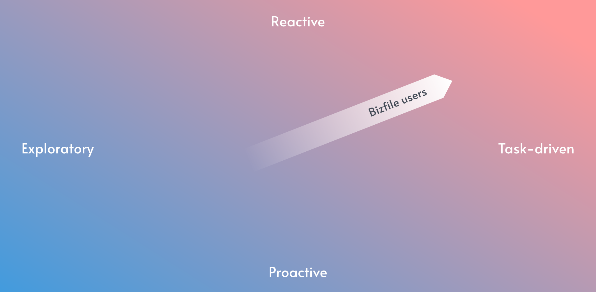

Accounting and Corporate Regulatory Authority (ACRA)
My Role
I worked closely with a team of designers to digitally transform ACRA's services.
Duration:
8 months
Responsibilities:
UI/UX Design, Design Language System
The Project
An introduction of the client and our deliverablesHigh-level Summary
Accounting and Corporate Regulatory Authority (ACRA) is a
Singapore Government Agency that is responsible for regulating all
business entities. public accountants and corporate service
providers within the country.
Accenture was hired as technological consultants to help ACRA
digitally transform their services, with the aim to streamline all
tasks related to business registration and maintenance for
business owners.
Our Deliverables
As part of the design team, we had the following responsibilities:
My Role and Contributions
As part of my role, I was responsible for a wide range of tasks that contribute to the success of the team and the organization as a whole. Some of my main responsibilities include:
- Consolidated and presented feedback from clients, Product Owners, and Business Analysts to update screen designs. Ensured that updated designs aligned with the DLS for scalability, responsiveness, and accessibility.
- Collaborated with the Functional and Technology teams to understand the product's functional requirements based on the client's needs, designed screens and our design system.
- Helped to develop a comprehensive set of design guidelines, principles, and standards that define the visual language of the system.
- Conducted user story mapping to facilitate the planning and implementation of features and functionality aimed at solving users' problems.
- Assisted the Creative Technology team in populating and updating components in Storybook using MDX and React.
Design Thinking
The design principles to followThe Interaction Model
Based on ACRA's user-system interactions, we seeked to identify a Bizfile user's mental modal by understanding their high-level journeys. Afterwhich, we came up with an Interaction Model that support the users to complete their objectives by implementing design elements that match their mental modal.
We found that Bizfile users are task-oriented and work reactive users who are extrinsically motivated only to get work done. Most of the time tasks can be timebound and critical.
Guiding Principles
With the Interaction Model in mind, we then crafted 5 guiding principles as a foundational requirement that contributes to consistent behaviour when interacting with the system. Designers will these as a guideline when designing the screen flows.
Contextual and Progessive Disclosure
Show relevant and necessary information up front without overwhelming users with too much at one go
Purposeful actions
Provide a clear explanation of the purpose and implications of each action the user can take
Next best course of actions
Promptly communicate the status and outcome of user's actions, recommending next best actions where possible
Helping hand
Provide assistance to the users, so that it limits human errors and users are able to recover from the errors
Liquid expectations
A perceptual gap where users felt when they encounter inconsistencies between a good experience on other websites and the experience they have on Bizfile
The Screens
Some of the screens I helped to designBrowsing API Marketplace
The API Marketplace is one of the services ACRA provides for their
customers. Here potential customers can learn more about the API
packages ACRA sells, and how they can use it to conduct their own
market research and analysis.
Full documentation and resources on the API endpoints are also
available.


Officer Workspace
These screens were designed for ACRA officer's internal use. We had to design for a large range of functionalities, such as Auditing, Enquiry and Maintenance of Entity Information.


Design Language System
How I was involved in it's creationDeveloping Guidelines
I worked with the design team to develope a comprehensive set of design guidelines, principles, and standards that define the visual language of the system. This was an important task as it ensured consistency throughout the product and maintained a cohesive design aesthetic. The guidelines I helped to develop served as a roadmap for both the team and our client, ensuring that everyone was on the same page and working towards the same design goals.
Populating Storybook
Due to my background in development, I was able to provide assistance to the Creative Technology team by helping them to populate and update the various components within Storybook. This involved using a combination of MDX and React to ensure that the components were up-to-date and fully functional. Although this was out of my primary responsibilities, I helped the team to identify any potential issues or areas for improvement, and provided feedback and suggestions as needed.